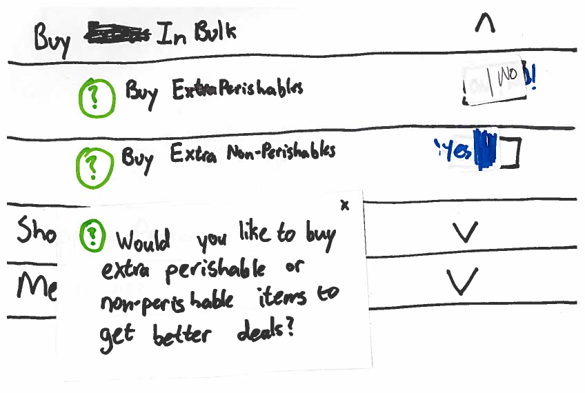

Design Development
September 28, 2014
What is it?
This is a mobile app for saving money into the planning process of grocery shopping in a passive manner. The app is centered around a shopping list and the list can be populated by either adding individual items or adding full meals, which are suggested based on available coupons and store promotions. When you add items to your list the coupons are automatically saved in the app and are accessible for when you check-out.
How does it work?
Main Menu
Tammy opens the app, she clicks open the main menu and sees her options to choose store, go to grocery list, go to cookbook, and go to preferences.
Cookbook - Meal Selection
Tammy looks through the cookbook for her daughter’s favorite macaroni and cheese, and taps the plus sign. She might add multiple meals from this page to create a full shopping list for the week, or simply add one special meal she’s sure she wants to make, and populate the rest of her list with individual items.
When Tammy gets home and wants to make the recipe that she found earlier, she returns to the cookbook and clicks on the meal that she had recently added to the list (it appears at the top of the list because she just bought the ingredients that day). Tammy taps the meal. The recipe page appears, but Tammy prefers to look at recipes on her computer because she knows her phone will get greasy or doughy if she handles it while cooking, so she emails the recipe to herself and opens the recipe on her laptop.
Tammy has a recipe that she loves to make when her sister comes over with her family. She taps the Add Meal button and names her meal. The ingredients autocomplete as she types and there is a place for notes to be written about the recipe.
The introduction of the cookbook page represents a major part of the evolution of our design. In our earlier designs, we have separate pages to select meals, see favorite meals, see recipes, and add new recipes. During our usability tests, this division led to a lot of confusion. Users tried to find cooking instruction in the meals selection page, even though the “Meals I’ve Bought” page was designated for this function. Furthermore, when users added a recipe using the “create your own meal page”, they didn’t understand that the relationship between this function and meal selection. They would add the recipe, and would try add it the newly added recipes to their list but were not sure how to find it on the meal selections page. It became clear that the setup of the pages did not match the conceptual model of our users. To align the system image with the user’s conceptual model we introduced the concept of a cookbook that neatly integrates the function of the four separate pages.

Old version of the menu

New version of the menu
Ingredients
When Tammy has selected a meal from cookbook she adds ingredients she doesn’t have in her pantry to her list. She does not add salt and pepper or olive oil because she already has these ingredients. The ingredients that are selected are automatically added to Tammy’s list.
First Iteration
Second Iteration
The interaction on this page has evolved considerably because this was a pain point in all of our tests. Our initial design had all the items checked off, and the user had the option to uncheck items that were already in her pantry or not wanted. This does not align with the user’s model. Users are used to adding items individually, and are used to have checks represent something that is already added. During our usability test, our users expressed their confusion, “so all these items have been added?” With this feedback, instead of having all items checked off by default, the user now adds each item individually. This design also takes into account the fact our users already have most of the ingredients that they need for any specific meal. This means that adding items needs is less cumbersome than removing items not needed.
List
Tammy goes to her list and sees the ingredients from the meals she has selected. At this point, she might decide to add individual items. For instance, if she added chocolate chip cookies using the search bar she would get options for cookies on sale, or just a generic ‘chocolate chip cookies’ option. She can see the price of each item and cross it off her list as she actually buys each item. She can also checkout and see specific coupons.
During testing we realized that the decisions involved in choosing items are far more complex than we originally appreciated - it became clear that we could not account for all the preferences of the shopper. For example, we heard from one user that she buys some fruits organic but will opt for generic most of the time, but this is a split second decision that would take a lot of effort to describe to the app. To take some of this burden off the app and give users more autonomy, we changed how the app handled item entry. In our revised version, the app only suggests specific brands if there are available coupons, and otherwise allows the user to enter a generic option so that the decision can be made at the store.
We are considering options to make this interaction more seamless and effective. From our usability tests, we now understand that Tammy’s shopping list remains largely consistent from one shopping trip to the next. With this in mind, we are considering ways to add a standard list to the app. Additionally, we are tossing around the idea of a quick add selection menu populated with branded items Tammy has expressed a predilection for. With these methods, we may be able to speed up the process of adding items by reducing the need to use the search feature.
Coupons Page
When Tammy finishes constructing her list, she has it ready for the grocery store. After she grabs all the desired items, she presses the “check out” button on the list page, and it brings up the coupons page where each coupon is displayed one by one to be scanned by the cashier. Tammy may have to tell the cashier to swipe to get to the next coupon, but after the cashier sees the app once, he will remember the swipe gesture. Regardless of what items Tammy crosses off her list, the app shows all coupons on the list so that if she forgot to check off an item, Tammy won’t miss out on savings.
Preferences
Tammy has been using the app for a while and wants to set her specific desires so that the app is easier to use. She sets her shopping preferences to buy only organic milk.
One of the challenges here is that the user should be able to specify their preferences without feeling bad about their choices. For instance, one of our users, who was very mindful of buying organic produce, considered the ‘humane meat’ options and moved past it saying “I don’t care about that”, but seemed to look around to check if our team had a reaction to that. Our app should not make her feel guilty for what she does or doesn’t buy, so we need to reconsider the phrasing of some of these preferences.
During our usability tests we received feedback that the option to select on/off is confusing when not supported by a guiding question. For instance, in dietary restrictions, a user had the option to select on/off for nuts, but does that means that she wants suggestions with nuts or without? Our dietary restriction page is now supported with a question, Do you eat? We replaced on/off with yes/no to provide choice that were natural to users. In subsequent usability tests, the new options were received well, but we received a suggestion for further improvement. One user felt that binaries were too limiting, and the option to select from a range may be more beneficial. The idea to replace yes/no with never, sometimes, always is something the team is now considering (an example of which can be seen in the Shopping Preferences image).
Shopping Preferences
This allows you to set preferences for brands and organic foods.
Dietary Restrictions
This allows you to set items that you will absolutely not eat.
Buy in Bulk
Allows you to set options to buy either perishables or non-perishables in bulk, if the cost is cheaper.
Add Store
Allows you to add other stores from which the app will find coupons
Why are we doing this design?
During the needs analysis phase, we discovered that shoppers value getting a deal on groceries, but using coupons requires too much effort and time before the actual shopping trip. The coupons currently available online and in coupon books must be thoroughly searched to find anything of value. The effort put in does not result in commensurate rewards (i.e, it may take 30 minutes to find a relevant coupon that takes $.50 off an item). This is something that our targeted users (Tammy and Paul) do not have the time and patience for.
Tammy is a working mother, who views grocery shopping as a “mom of the house chore”. She wants to get shopping done as quickly and painlessly as possible. The energy she does devote to shopping goes into making sure she gets the food that her family enjoys and will satisfy their nutritional needs. Tammy would like to save, but she is only going to focus on getting the food that meet her families requirements.
Paul is a recent college graduate who is occupied with his new job. He does not spend much time planning or preparing his meals. His meal selection is primarily motivated by deliciousness. He is not going to expend the energy to plan to shopping around coupons and store promotions.
Tammy and Paul would both love to save money on their grocery shopping, but not if it requires effort. Our users are primarily focused on nutrition and deliciousness. Our app is designed to leverage this focus to find the deals for them. The app allows users to make easily create a shopping list with their two main requirements, nutrition and deliciousness, in mind. Once this is done, the savings come to them.
User Needs
In creating this design, we’ve focused primarily on making sure that users can get the best price possible on the food they want to buy. Our design uses the process of constructing a shopping list as a vehicle to find and deliver savings opportunities. To do this we’ve created an app that integrates with the entire shopping process, including planning, making a list, and choosing items at the store. This is a deceptively complex process which involves a number of user needs other than saving money effortlessly. Some of the most important needs we address are shown in the table below.
| User Need | How we adress it | Drawbacks to our method |
|---|---|---|
| Make food their whole family likes | Users can sort meals in the cookbook to see their favorites. Users can set preferences so that meal suggestions only include foods they like. | We require some initial set up by users to enter their favorite recipes and mark them as such, as well as setting preferences. |
| Get grocery shopping done quickly | Getting coupons is an almost effortless process, and the meal selection functionality can decrease the time spent planning the list | Right now list entry and creation can be slow - especially if the user doesn’t want to create it from recipes. There are several modifications we’re considering to improve this process, including saving a preset shopping list or common items |
| Have a list that matches their shopping patterns | Some people shop by meals - our app allows for this seamlessly. For those who shop for individual items, items can be entered, and an autocomplete option speeds that proces | Entering individual items is slow. And if when entering recipes, the person doesn’t enter them in a way the app understands, it can undermine future results with those recipes. Also, we currently have no feature for sorting the shopping list in specific ways, or for having different lists for different stores. |
| Buy products that match their values (vegetarian, organic, etc) | Our app allows the user to set preferences and dietary restrictions, and will respect those when making shopping suggestions | We may not be able to account for unusual preferences or those the app may not have access to the necessary information for. In that case, app suggestions may become less useful. |
| Get the best price possible on the food they want to buy | Coupons are automatically retrieved and applied for the items on your list, meaning you don’t have to look for them at all. And if you enter a generic item type, the app will look for specific items that may have coupons, but leave it up to the user if they want them. | The app does not currently take into account sales. Also, if they go off of the meals, the app may end up suggesting they buy items they don’t really want, or from brands they don’t like. Coupon expiry and options to buy things in bulk need to be thought out better as well. |
| Feel competent | Our app allows users to be confident that they’re getting the best deal on what they want to buy, and is flexible enough to either let them make their list how they want, or support them in finding and shopping for recipes | To use our current set up most efficiently, users may need to do things that feel silly, like making a recipe for meals they can cook from memory. We’re considering modifications to alleviate this, like letting users save shopping carts rather than forcing them to put everything as meals - saving bread and jelly as favorite items is much less silly feeling than creating a recipe called “Toast”. |
Alternative Designs
Tammy and Paul focus on buying the things they want to eat. They want to save, but do not want to exert effort to realize these savings. One initial idea was to allow users to make their list as they would normally. After you making their list, users would receive a list of store suggestions that show which nearby stores offered the greatest savings on their list. From this list, users could see which of their items were on sale at a specific store (on the “Deals” page). They could also select a specific store to order their list according to that store’s layout. This design allows Tammy and Paul to save passively, and without significantly impacting how they make their list.
Tammy makes a weekly trip to the grocery store. In this single trip, she strives to get food for the entire week. With in mind, we conceived of a mobile/web app that would allow Tammy to plan the week’s meals in great detail. This design emphasized meals as a means of constructing a shopping list and visibly incorporating available deals into this meal selection. This design tried to maintain the passivity of the design above while more seamlessly incorporating promotions/coupons into the decision making process. Tammy is not willing to orient her life around coupons, but coupons may nudge her in a certain direction when she is not sure what to get. In this design, we wanted to give Tammy the freedom to realize larger savings in way that was not obtrusive to her main goal of securing food for the week.
The first design was limited to adding single items to a shopping list. The second design introduced meals as a unit for constructing shopping list, but lacked the flexibility to handle single items. Our final choice took the strongest elements of each design. In the third design, Tammy and Paul can develop their lists by thinking in terms of meals or individual items. Tammy and Paul primarily care about getting the food that they want; savings is secondary, and because of this it essential that they can easily construct the shopping list in the way that makes sense to them. The shopping list is the vehicle through which promotions/coupons are brought to Tammy and Paul.
The meal selection in this design took out the calendar because we did not have evidence that Tammy plans her meals out by day. Additionally, the prominence of the calendar meant that the app was useless to Paul. Paul makes frequent trips to the grocery store, and does not buy a lot at once. Unlike in the first option, Tammy is not told what is on sale or what she can buy for cheaper because she doesn’t care. She just wants to buy what she regularly would buy for a cheaper cost. In the third design, meal selection is an easy way to items to a shopping by thinking in terms of meals. This complements the ability to add single items. This design adapts better to the many different ways in which people shop.